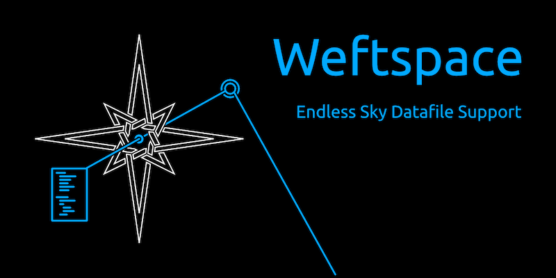

Weftspace 2.0.0
2 August 2026
Weftspace version 2 is out! This release overhauls large parts of the library, putting more control in your hands and adding a huge amount of unit testing and style checking (including the squashing of a couple minor bugs discovered in the process).

It's been a long time since the last release of Weftspace, and I've learned a lot in the meantime (like how to actually structure unit tests properly, for one... was I seriously crazy enough to specify one unit test per method just eight months ago?). As a result, this iteration of the library is far sturdier, with a set of guiderails meant to make sure that it does what it's supposed to and changes to the library that allow the developer using it to control how errors are handled rather than enforcing a single method.
I've also stripped back bloated functionality that didn't add anything: node flags were removed in this update because they were easy to forget about and never fully supported, and the extra options for the various Builder methods were removed because the test criteria were all subjective and trivial to implement.
Anyhow, I hope you find this release useful. As always, it's available on GitHub and PyPI. If you find a problem with the library or just have questions, please open an issue or ping me on the Endless Sky Discord server.